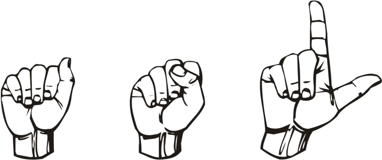

Gesture Detection

Perform hand gestures to interact
What our website provides:
Our website offers cutting-edge gesture detection technology, allowing users to interact with devices and applications using intuitive hand movements. Whether you're a developer looking to integrate gesture control into your projects or an enthusiast eager to explore the possibilities of hands-free interaction, our platform provides the tools and resources you need to harness the power of gesture recognition.